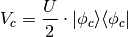
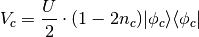
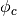

DFT+U(MO) - Applying potentials to arbitrary orbitals¶
Basics¶
We can employ the molecular orbital projections we have introduced
in the le  SCF formalism to also introduce penalty potentials
that shift specific orbitals up or down. This can be used to specify the
HOMO-LUMO of an adsorbed molecule or to modify the level alignment with the
metal substrate. This constraint potential can be combined with population constraints.
SCF formalism to also introduce penalty potentials
that shift specific orbitals up or down. This can be used to specify the
HOMO-LUMO of an adsorbed molecule or to modify the level alignment with the
metal substrate. This constraint potential can be combined with population constraints.
For more details and an example application on Porphine molecules adsorbed at coinage metal surfaces, see J. Chem. Phys. 144, 024701 (2016).
In order to use this functionality we need to put following sequence into the <seed>.param
%BLOCK DEVEL_CODE
DeltaSCF
%ENDBLOCK DEVEL_CODE
and add following keyword to <seed>.deltascf
deltascf_mode : 2
In this mode we add a potential to the Hamiltonian for each defined constraint, which has the following form:

If we specify
%BLOCK DEVEL_CODE
DeltaSCF norealCDFT
%ENDBLOCK DEVEL_CODE
following potential is applied

Here is the occupation of the projected state .
You can find a detailed description of these potentials in Appendix D of “First-Principles Description of the Isomerization Dynamics of Surface-Adsorbed Molecular Switches”, Doctoral Thesis, Technische Universität München, 2014
Keywords allowed in <seed>.deltascf¶
In the .deltascf file, the keyword title plus colon takes exactly 23 columns (A20,3X). The keyword content starts after that. Lines with ‘#’ are ignored.
- WARNING
- The number of blanks between the keywords does count!! The best thing is to copy and modify the example from the manual.
| keyword | multiple appearance | arguments and FORTRAN format |
|---|---|---|
| deltascf_iprint | No | <integer I> |
| deltascf_file | No | <string> |
| deltascf_ldau_file | No | <string> |
| deltascf_constraint | Yes | <#state I5>1X<occ. F8.4>1X<spin I4>1X<U in ev F12.6> |
| overlap_cutoff | No | <float F8.4>, default: 0.01 |
| deltascf_mixing | No | <float F8.4>, default: mix_charge_amp |
Example .deltascf file:
deltascf_mode : 2
deltascf_file : bla.check
deltascf_ldau_file : bla2.check
deltascf_iprint : 1
#mode 2 constraints add. deltascf_excite commands##
# band occ spin +U in eV
deltascf_constraint : 34 0.0000 1 -1.40
deltascf_constraint : 35 1.0000 2 0.70
deltascf_excite
overlap_cutoff : 0.01
deltascf_mixing : 0.05
In this example, two +U constraint potentials act on orbital no. 34 of the majority spin channel and orbital no. 35 of the minority spin channeltaken from the deltascf_ldau_file bla2.check. In addition, the occupation of orbital no. 35 taken from file deltascf_file bla.check is constrained to the occupation 1.000. Excitation constraints are activated by following a deltascf_constraint with the deltascf_excite command.
Example 3: Controlling the HOMO-LUMO gap of Azobenzene¶
For this example we need the following files
azo.param azo.cell azo.deltascf
azo.cell
%BLOCK LATTICE_CART
10.0000000 0.0000000000 0.0000000000
0.0000000000 20.0000000 0.0000000000
0.0000000000 0.0000000000 10.0000000000
%ENDBLOCK LATTICE_CART
%BLOCK POSITIONS_ABS
C -6.72081 -1.66625 0.00000
C -6.64967 -0.26964 0.00000
C -5.40647 0.36858 -0.00000
C -4.23175 -0.38857 -0.00000
C -4.29745 -1.78579 -0.00000
C -5.54882 -2.43430 -0.00000
H -7.68820 -2.15296 0.00000
H -7.55879 0.31772 0.00000
H -5.35348 1.44963 -0.00000
H -3.26966 0.10734 -0.00000
H -3.37789 -2.35693 -0.00000
N -5.65342 -3.85046 -0.00000
N -4.64259 -4.58194 -0.00000
C -4.75058 -5.99808 -0.00000
C -6.00434 -6.64214 -0.00000
C -6.07567 -8.03881 -0.00000
C -4.90409 -8.80053 -0.00000
C -3.65828 -8.16721 -0.00000
C -3.58139 -6.77065 -0.00000
H -2.61200 -6.28795 -0.00000
H -6.92178 -6.06761 -0.00000
H -7.03986 -8.53061 -0.00000
H -4.96168 -9.88134 -0.00000
H -2.75170 -8.75849 -0.00000
%ENDBLOCK POSITIONS_ABS
FIX_ALL_CELL : True
KPOINTS_MP_GRID : 1 1 1
azo.param
task: SinglePoint
%BLOCK DEVEL_CODE
DeltaSCF
%ENDBLOCK DEVEL_CODE
reuse: default
spin_polarized : False
cut_off_energy : 350.0
elec_energy_tol : 1e-07
fix_occupancy : False
iprint : 1
max_scf_cycles : 200
metals_method : dm
mixing_scheme : Pulay
nextra_bands : 10
num_dump_cycles : 0
opt_strategy_bias : 3
smearing_scheme : Gaussian
smearing_width : 0.1
xc_functional : PBE
azo.deltascf
deltascf_mode : 2
deltascf_iprint : 1
deltascf_file : bla.check
deltascf_ldau_file : bla.check
# band occ spin +U in eV
deltascf_constraint : 34 0.5000 1 -1.00
#deltascf_excite
deltascf_constraint : 35 0.5000 1 1.00
#deltascf_excite
We first calculate the ground state of azobenzene and copy the corresponding wavefunction file azo.check
to the file bla.check. We use this file for reference orbitals for +U(MO), but also for SCF
excitation constraints. We find a HOMO-LUMO gap with PBE of 1.51 eV, which is significantly lower than the
HOMO-LUMO gap estimated with a hybrid functional.
After running the DFT+U(MO) calculation with a -1.00 eV constraint on MO 34 and a +1.00 constraint on MO 35, we find a HOMO-LUMO gap of 2.46 eV.
If we now uncomment the deltascf_excite commands, we can apply the MO constraints and enforce excited state occupations that model the S1 excitation of azobenzene. The corresponding excitation energy is 2.90 eV (compared to 1.96 eV in Example 1).
- WARNING
- This module gives a lot of freedom in combining methods and parameters. However, only few combinations are physically sensible.